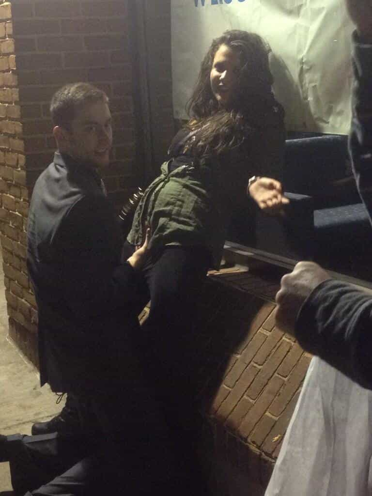

< < < Back
What Real Rape Culture Looks Like – Return Of Kings
Anna recently celebrated her birthday, but her party was a muted affair. Not many people feel like celebrating in times like these. Their country has been at war for six years. Most don’t really know the reason why or how it started; Anna herself was merely twelve when it began. All she knows is that the city she lives in is bombed often and most of the men in her life—friends, family, lovers—have been conscripted by the army. Many of them have died while others are listed as missing in action. Some have come back from the front horribly mutilated, missing limbs, minds shattered.
Anna’s unsure when the war will end but despite the calm reassurances of the country’s leader (who become leader for life twelve years ago, when she was six), rumours circulate that her country is losing the war. Anna suspects this is true since the evidence is all around her. All the men save those too old or too young have been placed in uniform and marched off. Incessant bombing raids by the enemy’s air force, obviously uncontested by her the pilots of her own country, occur on almost a bi-weekly basis. Leaflets dropped from enemy planes inundate the country side, and even though the security forces have threatened anyone who reads them with death, trusted friends have shown them to Anna. The leaflet’s say that the enemies forces are closing in on their country’s borders with alarming speed.
Anna is scared yet has no idea what to do. Her father is gone, brothers too. Her mother was grievously wounded in a bombing raid and is hospitalized. She is on her own, and tries to live life as best she can.
One day, to the east, Anna hears a battle being fought close to the city. Soon thereafter many of her country’s soldiers enter the city, retreating west as fast as they can. Anna desperately wants to join them, but this city is her home. Her mother is in the hospital here, and if she leaves how will her brothers and father be able to find her? There is also the fact that enemy soldiers are closing in from the west as well. In the end she does not see the point of fleeing. She hopes for the best.
The next morning the enemy arrive. A motley force of weary faced men and women riding on tanks with submachine guns slung across their backs fill the streets. During the day they drive through the city in column after column, seemingly numberless. Most soldiers seem to pay her no heed; a couple even wave Anna over and offer food. Having been near starvation for the last year she cautiously accepts it, thanking them in her language even though they can’t understand each other.
Toward evening columns begin to stop. Soldiers dismount off tanks to prepare their dinners. Anna see bottles of alcohol begin to circulate, and as the sun settles she listens to an ever increasing chorus of gun fire rattling in adjacent neighbourhoods and raucous laughter echoing off ruined buildings. Anna locks her door and tries to go to sleep.
A few hours later the screams begin. Women’s screams. More laughter. Anna rolls out of bed and peeks out the window. Out in the street, illuminated by headlights (the electricity in her city has been out since February) she sees clusters of enemy soldiers. In the middle of them she sees pale, writhing bodies. Women. Women surrounded by men. They’re being raped. Suddenly Anna notices a soldier notice her, and she retreats away from the window. Within minutes her door is kicked in. Three soldiers rush in, blinding her with their flashlights. They shout at her in their language.
“I don’t understand you!” Anna cries back.
“Come! Come!” they bark in a crude attempt at her language.
Anna shakes her head and screams as hands grab her by the arm and hair. She’s forced outside into the street.
“Stop! Let me go!” she pleads.
A fist hits her. Her head is yanked back. The cold barrel of a pistol is shoved against the side of her head. She can actually feel, not just hear, the hammer being pulled back.
“Fuck you!” the owner barks in her ear. “Fuck you!” another shouts as he strikes her again.
Her dress is ripped off, her underwear thrown aside. There is no hesitation. The moment she’s forced down to the street a soldier begins to rape her. He finishes inside Anna quickly, but another jumps on her before the first has even pulled up his underwear. By the time the fourth one finishes Anna feels numb. They surround her, laughing, occasionally kicking or shoving a gun into her face. There are even women in uniform watching, goading their countrymen on. Occasionally, when the light passes over exposed male genitalia, Anna sees sores and bumps, sure signs of venereal disease. Sometimes, when it’s close to her face, Anna imagines she can even see crabs squirming in their pubic hair. And the whole time pictures are taken of the assault like she’s a hunter’s trophy.
Eventually it just seems to stop. Her vagina is mutilated. Anna gathers her rags about herself and drags herself upstairs to try and sleep.
The next day she visits one of the few doctors not conscripted into the army. The line into his inadequately staffed and grossly under-supplied office goes around the block. In the improvised emergency room she is crudely disinfected with very little medicine, and the doctor only has enough stitches to sew up the worst parts outside her vagina. He can’t get the rips inside her because he’s far too busy and ill equipped to do so. She goes home and tries to let her body heal itself. There is no one there to comfort her and with the water not running Anna can’t even take a bath to clean herself.
Anna is raped again that night and several other times thereafter. A tell tale bump appears after weeks of living like this. She’s pregnant with the enemy’s child. She could never tell which one of the dozens of men who raped her fathered it.
This horrifying scenario is what millions of German women in 1944 and 1945 lived through when the Soviet Red Army swept toward them. It’s undoubtedly what many women throughout history on the losing sides of war faced. Nothing I wrote above was made up or exaggerated. In 1944 the Red Army on the Eastern Front of World War 2 finally began closing in on Nazi Germany. As soon as they left Russian soil Soviet soldiers began to rape en masse. Not just Germans either. Women in every country west of Russia were indiscriminately raped. This even includes Holocaust survivors. Yes, Soviet soldiers drove up to the death camps, saw the mounds of naked bodies and emaciated women within the barb wire and their first instincts were to begin raping every woman with a pulse.
Today’s western women really have no idea how lucky they are to live in societies where the vast majority of men are sickened by the thought of rape and consider it one of the worst evils imaginable. Can any western woman of sound mind, in her vilest imaginings, honestly envision any of her male peers being able to rape a woman freshly liberated from Auschwitz? If so, I’m be more concerned about the morality of the woman.
The main inspiration for this article came from Anthony Beevor’s book The Fall Of Berlin 1945. Beevor is one of the première military historians writing today and for any history buff who doesn’t know him I recommend anything he’s written. Here are some examples from his book to illustrate what a real rape culture is;
“Yet there still seemed to be little idea of the degree of horrors in store for them. The most prevalent for girls and women of all ages was gang rape.
[…]
“Red Army soldiers don’t believe in “individual liaisons” with German women… Nine, ten, twelve men at a time – they rape them on a collective basis.”
[…]
“In fact victims could be as young as twelve years old. ‘The NKVD group attached to the 43rd Army discovered that German women who had stayed behind in Schpaleiten had tried to commit suicide. They interrogated one of them called Emma Korn. “On 3 February,” she told them, “frontline troops of the Red Army entered the town. They came into the cellar where we were hiding and pointed their weapons at me and the other two women and ordered us into the yard. In the yard twelve soldiers in turn raped me. Other soldiers did the same to my two neighbours. The following night six drunken soldiers broke into our cellar and raped us in front of the children. On 5 February, three soldiers came, and on 6 February eight drunken soldiers also raped and beat us.” ’ Three days later the women tried to kill the children and themselves by cutting all their wrists, but evidently they had not know how to do it properly.”
[…]
“Once soldiers had alcohol inside them, the nationality of their prey made little difference. Lev Kopelev described hearing a ‘frenzied scream’ in Allenstein. He saw a girl, ‘her long, braided blonde hair dishevelled, her dress torn, shouting piercingly: “I’m Polish! Jesus Mary, I’m Polish!” ’ She was pursued by two inebriated ‘tankists’ in full view of everyone.”
[…]
“It seems as if Soviet soldiers needed alcoholic courage to attack a woman. But then, all too often, they drank too much and, unable to complete the act of rape, used the bottle instead with appalling effect. A number of victims were mutilated obscenely.”
[…]
“…there was no chance of escape. Nuns, young girls, old women, pregnant women and mothers who had just given birth were all raped without pity.”
[…]
“If anyone attempted to defend a woman against a Soviet attacker it was either a father or a young son trying to protect his mother. ‘The thirteen-year-old Dieter Sahl threw himself with flailing fists at a Russian who was raping his mother in front of him. He did not succeed in anything except getting himself shot.”
Events like that would be hard to read about even if they were fictional. Yet this really happened, and the fact that it did in a supposedly civilized area of the world, less then 70 years ago, is chilling. That’s why it’s beyond infuriating to hear things like ‘the west has a rape culture’ or that men who perpetrate seduction game are ‘rapists’. To use a phrasing they themselves love, I submit that the bored idiots who claim that we in the west perpetrate a rape culture have no idea how utterly privileged they are.
They’re unintelligent, they’re ignorant of history and just saying that they live in a rape culture belittles the real victims of rape and trivializes the millions of women living in real rape cultures (which, ‘coincidentally’, all exist outside of the West). Hundreds of thousands of men forcing themselves on hundreds of thousands of women is a rape culture. A few episodes of Law and Order where the rapist gets off and women feeling regret after having a drunken one night stand with a stranger is as far from rape culture as the Earth is from the Sun. There is no comparison.
Admittedly there were rapes on the Western Font of World War 2 perpetrated by American and Anglo forces. Yet the numbers pale when compared to the Soviet army, and gang rapes did not occur on any type of comparable level with western soldiers. For the most part, when western soldiers liaised with German women they provided food and cigarettes and other luxuries and the German women willingly slept with them. Nowadays we call that dating. And the western allies didn’t rape out France or Holland or Belgium, like the Soviets raped out Eastern Europe.
Women in the west are extraordinarily lucky to live with such civilized men. And yet they and their pathetic manslaves are trying to destroy our once phenomenal and nowadays mostly all-right culture by voting in politicians and parties who are already flooding our countries with non-western men from societies that have real rape cultures. Here, I’m going to show you two pictures from two proclaimed rape cultures, one real and one supposedly real. Can you tell, at a glance, which one comes from the western ‘rape culture’ and which one comes from the Middle Eastern rape culture?


Perspective is a powerful thing. Utopian daydreamers and overeducated fools who think Jean-Jacques Rousseau wasn’t full of crap are going to be forced to get some the hard way as our society degrades under the masses of the ‘heroic’ third world types they’re forcing open the gates for. Real rape cultures do exist, and they currently exist exclusively outside of western countries. However, as our elites and their cronies continue to import citizens from these cesspools, a new rape culture will take root in our once safe nations. We are already seeing the beginnings of rape culture taking hold in the Scandinavian countries as more and more Middle Easterners are welcomed in, and it’s likely that, if immigration trends continue, the woman of the larger western democracies will soon suffer the same scale of rape that their Nordic sisters are already being subjected to by unchecked diversity.
All I can say is, thank god I’m a man. The west of the future doesn’t look so bleak for it’s Y chromosome children.
The men and women of thoughtless liberalism will reap what they sow. I hope they enjoy it, and don’t forget to tell their or their partner’s rapists how much they honour their rapist’s culture while they assault them. I’m very sure all those German girls were telling their Soviet defilers something similar.
A REBUT AGAINST THE EVENTUAL SO WHAT THEY WERE NAZI’S COMMENT
Hey Billy, who cares? After all most of these raped women were Nazi’s! They deserved it.
I expect a comment like that to pop up at some point, and to avoid posting a wall of text in the comments I’ll post it up here.
Dear sirs or madam, if you honestly think like that then you’re heartless and wrong. Here is how the German elections in 1933 played out. Here is a census giving a rough idea how many people lived in Germany at the time (remember, not all of voting age). According to the census, there were 65,362,115 Germans in 1933. According to the voter turnouts, 44,685,764 million voted (71.6% of the population; total percentage of the voting age population unknown). Of the 44,685,764 million who turned out to vote, only 17,277,180 voted for Hitler. The Nazi party did not even win a majority, since a majority would have needed to control 324 seats and the Nazis won only 288. Hitler was never voted in as a dictator. He gained absolute power through the historically unfortunate death of Paul von Hindenburg, back room political shenanigans and manipulating political policies that the public had no control over or say in. Out of 65,362,115 Germans, only 17,277,180 could legitimately be called Nazi’s and blamed for what happened to their country. Using my shaky math, the total percentage of legitimate Nazi’s in Germany who voted for Hitler was 26.43 percent.
Roughly 3 out of 4 Germans did not deserve anything that happened to them, the majority of the raped women included. Many girls raped by the Soviets were not even born when Hitler seized power, and many more at the time were children or young teens who could not vote or understand the reality of politics. Like their young male counterparts doing most of the fighting and dying in a war they had no decision in starting, these women and girls had their lives ruined by a minority of the population. The political parallels to today’s progressives are eerie, and just go to show how letting even a small group of radical people with evil, ignorant and selfish agendas influence the rest of us can doom everyone.
Read More: The Warsaw Rising


{kind=link}
{kind=link}